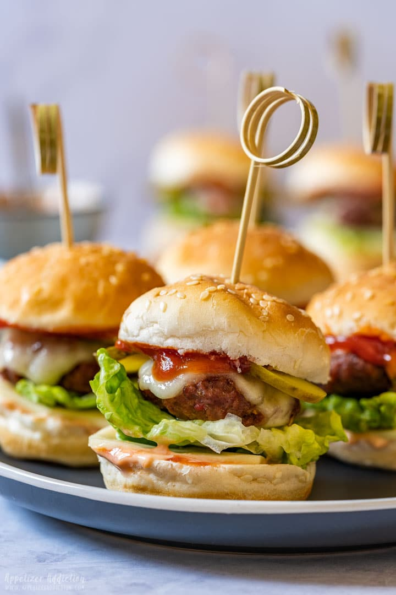

Mini Cheeseburgers
This is a recipe for mini cheeseburgers (credit to Open Source Cookbook)
Return To Homepage
Description:
Beef sliders are a small version of a hamburger. A little trick helps you to get them all the same size so they cook evenly and look very professional.
Do a couple of tests to determine your perfect degree of doneness and cook all the burgers the same amount of time.

Ingredients:
- 1 medium onion, about 1 cup finely chopped
- 1/4 cup fresh parsley, finely chopped
- 2 lb lean ground beef
- garlic cloves, minced
- 1 tsp salt
- 6 slices American cheese
- 8 hot dog buns
- 24 hamburger dill pickle slices (optional)
Directions:
- Preheat oven to 450 degrees F. Finely chop onion and parsley. Combine beef, onion, parsley, garlic and salt in a bowl; mix well.
Press beef mixture evenly over bottom of a large bar pan. Bake 10-12 minutes or until beef is no longer pink.
- Meanwhile, cut cheese into quarters; set aside. Slice buns apart neatly at seams (do not separate tops from bottoms).
Trim about 1/4 inch from each bun end to square off ends (discard trimmings). cut buns into thirds for a total of 24 square mini buns, set aside.
- Remove bar pan from oven. Pour off juices, if necessary, and place on a cooling rack.
Cut beef mixture into 24 squares using a pizza cutter. Top each burger with one pickle and one piece of cheese.
Place one bun top onto each burger; top with one bun bottom. Cover bar pan with aluminum foil and bake 3-5 minutes or until cheese is melted and buns are warm.
- To serve, place one burger with bun top onto one bun bottom using a mini spatula. Repeat with remaining burgers and bun bottoms. Serve immediately.